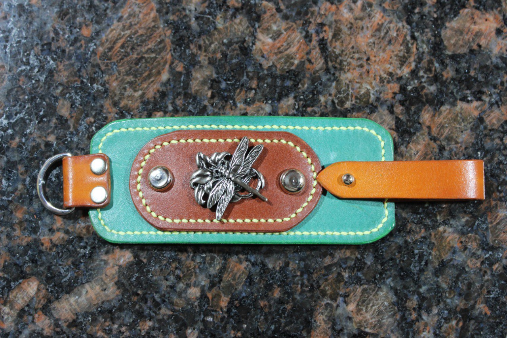
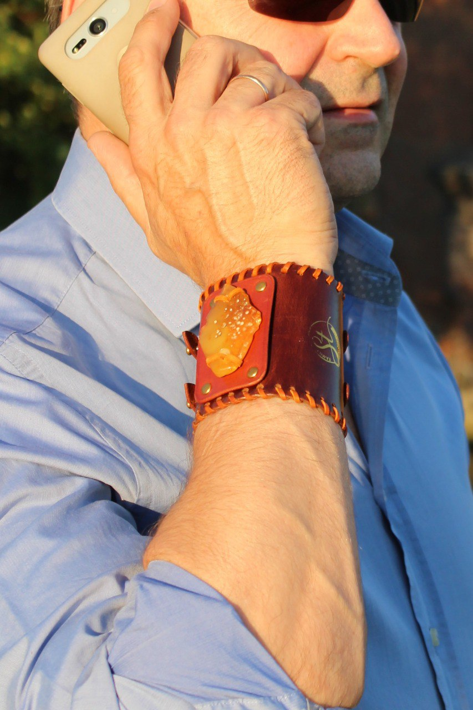
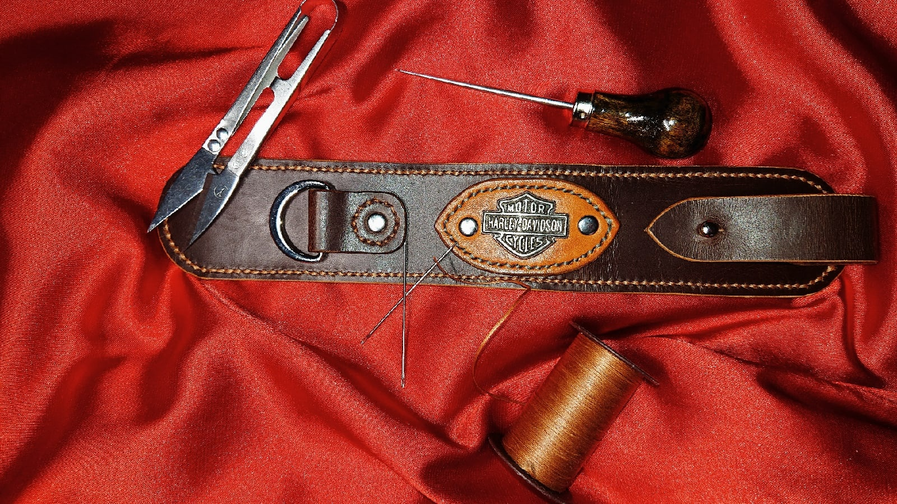

Браслет-напульсник с крупным янтарем. Изготовлен под заказ. Янтарь закреплен шнуром из кожи. В основе изделия кожа КРС выделки «Crazy Horse».
5000 р.

Новый браслет с кончо "Стрекоза". Выполнен из кожи растительного дубления. Обработан специальным кремом, который придает коже натуральный шелковистый блеск и защищает от осадков.
2500 р.

Браслет-напульсник, изготовлен под заказ.
2500 р.